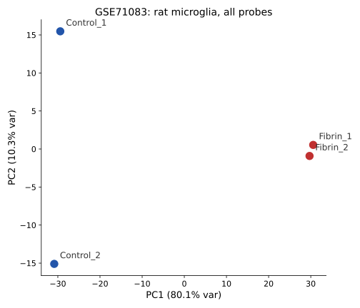
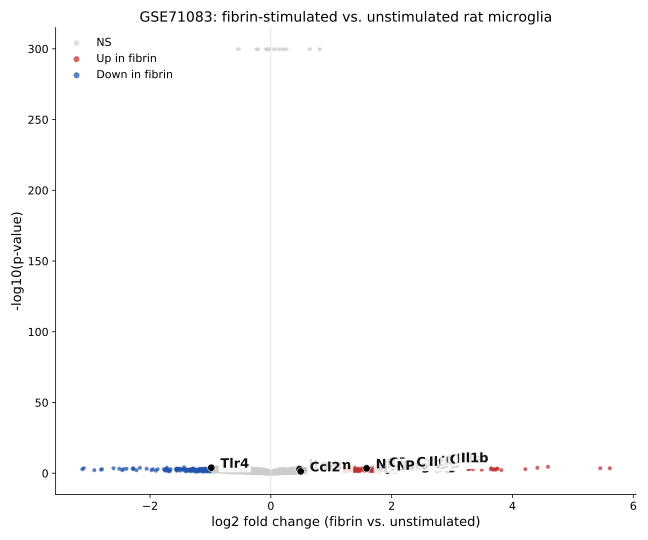

This page documents a small, self-directed re-analysis of a public dataset from the Akassoglou Lab at the Gladstone Institutes / UCSF, whose work on fibrinogen as a blood-derived driver of microglia activation and neuroinflammation I came across while looking into labs doing computational work on neurovascular and neuroimmune mechanisms.
GSE71083 — rat primary microglia, RMA-normalized Affymetrix Rat Gene 1.0 ST array data, two unstimulated controls vs. two fibrin-stimulated samples (6 hr fibrin exposure). Linked to Ryu et al., "Fibrinogen and blood-brain barrier disruption" lineage of work from the lab, part of the broader fibrin → microglia neurotoxic gene program story the lab has built out since.
I downloaded the series matrix and Rat Gene 1.0 ST platform annotation directly from GEO, mapped probe IDs to gene symbols, and ran a per-gene t-test (fibrin vs. unstimulated) with Benjamini–Hochberg FDR correction in Python (pandas / scipy / scikit-learn). Code is in analyze.py and make_figures.py in this repo.
log2fc = expr[fib_cols].mean(axis=1) - expr[ctrl_cols].mean(axis=1) tstat, pval = stats.ttest_ind(expr[fib_cols].values, expr[ctrl_cols].values, axis=1) # Benjamini-Hochberg FDR correction applied across ~14,000 annotated genes


The genes that come up as upregulated with fibrin stimulation are consistent with the lab's published framing of fibrin as a driver of innate immune activation in microglia — pro-inflammatory cytokines and chemokines (Il1b, Tnf, Il1a, Il6, Ccl5, Cxcl1, Cxcl10), inflammatory mediators (Ptgs2, Nos2), complement (C3), and the NF-κB pathway (Nfkb1) are all up, while Tlr4 is modestly down — interesting given TLR4 is itself an upstream sensor in some fibrin-signaling models, worth checking against the lab's mechanistic papers rather than reading too much into a single small array.
| Gene | log2FC (fibrin vs. ctrl) | p-value | FDR |
|---|---|---|---|
| Il1b | +2.99 | 0.0013 | 0.051 |
| Il1a | +2.93 | 0.0041 | 0.071 |
| Tnf | +2.69 | 0.0015 | 0.053 |
| Cxcl1 | +2.75 | 0.0043 | 0.072 |
| Ccl5 | +2.81 | 0.0007 | 0.047 |
| Il6 | +2.47 | 0.0098 | 0.096 |
| Cxcl10 | +2.26 | 0.0009 | 0.047 |
| Ptgs2 | +2.08 | 0.0098 | 0.096 |
| Nos2 | +1.93 | 0.0116 | 0.102 |
| C3 | +1.81 | 0.0002 | 0.037 |
| Nfkb1 | +1.59 | 0.0004 | 0.045 |
| Tlr4 | −0.99 | 0.0001 | 0.032 |
Full results: de_results.csv (~14,000 genes tested).
Data: GEO accession GSE71083, downloaded June 2026. Platform: GPL6247 (Affymetrix Rat Gene 1.0 ST Array), RMA-normalized by the original submitters. Analysis: Python 3 (pandas, scipy, scikit-learn), independent two-sample t-test per gene, Benjamini–Hochberg FDR correction. This does not reproduce the original paper's limma-based statistics and is intended as an independent exploratory pass, not a replication.